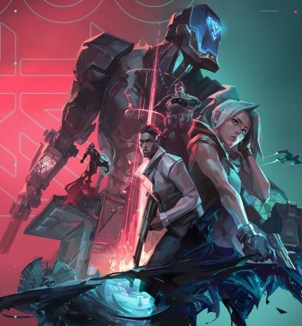

Agentes
Actualmente Valorant posee 17 agentes/personajes, cada uno con su propio set de habilidades que los caracterizan. Los agentes se dividen en cuatro grupos dependiendo de su rol dentro del juego, estos grupos son:
- Duelistas: son asesinos autosuficientes que, gracias a sus habilidades y destrezas, suelen conseguir iniciar enfrentamientos y anotar muchos asesinatos.
- Iniciadores: se centran en servirse de ángulos inusuales para ayudar a su equipo y adentrarse en territorios clave y alejar a los defensores.
- Controladores: se especializan en dividir terrenos peligrosos en varias zonas para que su equipo pueda encargarse del resto.
- Centinelas: son expertos en defensa que se centran en bloquear áreas y vigilar los flancos tanto durante las rondas de ataque como en las de defensa.
Ya vimos en que grupos ser dividen los agentes dependiendo de su set de habilidades, pero... ¿Cuales son estos agentes?:
- Jett: // ROL DUELISTA // BIOGRAFÍA Proviene de Corea del Sur. El ágil y evasivo estilo de pelea de Jett le permite enfrentarse a riesgos que otros no pueden. Es imparable en todos los enfrentamientos y acaba con sus enemigos antes de que sepan qué los atacó.
- Raze: // ROL DUELISTA // BIOGRAFÍA Raze llega de Brasil con su explosiva personalidad y sus grandes armas. Gracias a su contundente estilo de juego, es muy buena para separar los enemigos atrincherados y para despejar espacios estrechos con una gran cantidad de explosiones.
- Breach: // ROL INICIADOR // BIOGRAFÍA Breach, el sueco biónico, lanza poderosas ráfagas cinéticas para abrirse paso a la fuerza a través del territorio enemigo. El daño y la interrupción que inflige garantizarán que ninguna pelea sea justa.
- Omen: // ROL CONTROLADOR // BIOGRAFÍA Un espectro de la memoria, Omen caza entre las sombras, ciega a los enemigos, se transporta a través del campo de batalla y deja que la paranoia los invada mientras intentan descubrir dónde atacará.
- Brimstone: // ROL CONTROLADOR // BIOGRAFÍA Proveniente de Estados Unidos, Brimstone proporciona una constante ventaja para su equipo con su arsenal orbital. Su habilidad otorga información de forma precisa y a distancia, lo que lo hace un comandante sin igual en el campo.
- Phoenix: // ROL DUELISTA // BIOGRAFÍA Proviene del Reino Unido. El poder estelar de Phoenix se manifiesta en su estilo de combate al incendiar el campo de batalla con sus granadas aturdidoras y cegadoras. Sin importar si cuenta con apoyo o no, participará en la batalla bajo sus propios términos.
- Sage: // ROL CENTINELA // BIOGRAFÍA El bastión de China. Sage proporciona seguridad para sí misma y para su equipo en cualquier lugar. Gracias a su capacidad de revivir a sus compañeros caídos y evitar ataques agresivos, les da un lugar de protección en medio de la caótica pelea.
- Sova: // ROL INICIADOR // BIOGRAFÍA Proveniente de la tundra del eterno invierno de Rusia. Sova rastrea, encuentra y elimina a sus enemigos con gran eficiencia y precisión. Su arco personalizado y sus increíbles habilidades de exploración impedirán que sus enemigos puedan esconderse de él.
- Viper: // ROL CONTROLADOR // BIOGRAFÍA Química estadounidense, Viper despliega varios artefactos químicos venenosos para controlar el campo de batalla y afectar la visión de los enemigos. Si las toxinas no asesinan a su presa, sin duda lo harán sus juegos mentales.


- Cypher: // ROL CENTINELA // BIOGRAFÍA Cypher, el agente de información marroquí, es un sistema de vigilancia de un solo hombre que puede monitorear todos los movimientos de sus enemigos. No hay secreto que no descubra ni maniobra que no detecte. Cypher siempre está vigilando.
- Reyna: // ROL DUELISTA // BIOGRAFÍA Desde el corazón de México, Reyna llega para dominar los duelos uno contra uno y cada asesinato que realiza aumenta su poder. Su letalidad solo está limitada por tu destreza al usarla, por lo que su eficacia dependerá mucho de ello.
- Killjoy: // ROL CENTINELA // BIOGRAFÍA Killjoy, la prodigio de Berlín, asegura fácilmente el campo de batalla con un arsenal de dispositivos. Si el daño que inflige su equipamiento no detiene a sus enemigos, la debilitación de sus robots la ayudarán a aniquilarlos.
- Skye: // ROL INICIADOR // BIOGRAFÍA Procedentes de Australia, Skye y su manada de bestias se abren paso por territorio hostil. Con sus creaciones que obstaculizan al enemigo y su poder para sanar a los demás, los equipos serán más fuertes y seguros al lado de Skye.
- Yoru: // ROL DUELISTA // BIOGRAFÍA El nativo de Japón, Yoru, fractura la realidad para infiltrarse en las líneas enemigas sin ser visto. Con engaños y agresividad por igual, sorprende a sus objetivos antes de que sepan dónde buscarlo.
- Astra: // ROL CONTROLADOR // BIOGRAFÍA La agente ghanesa Astra canaliza las energías del cosmos para remodelar los campos de batalla a su antojo. Con pleno dominio de su forma astral y un talento para una profunda previsión estratégica, siempre está eones por delante del próximo movimiento de su enemigo.
- KAY/O: // ROL INICIADOR // BIOGRAFÍA KAY/O es una máquina de guerra creada con un solo propósito: neutralizar radiantes. Su poder para suprimir las habilidades enemigas neutraliza la capacidad de sus rivales para contraatacar, un aspecto que le da a él y a sus aliados la ventaja definitiva en la batalla.
- Chamber: // ROL CENTINELA // BIOGRAFÍA Bien vestido y bien armado, el diseñador de armas francés Chamber repele agresores con una precisión mortal. Aprovecha su arsenal personalizado para mantener a los enemigos a raya y eliminarlos desde lejos. Siempre cuenta con la contingencia perfecta para cada plan.